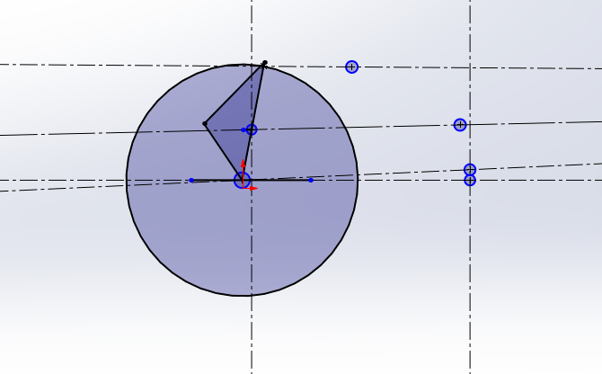
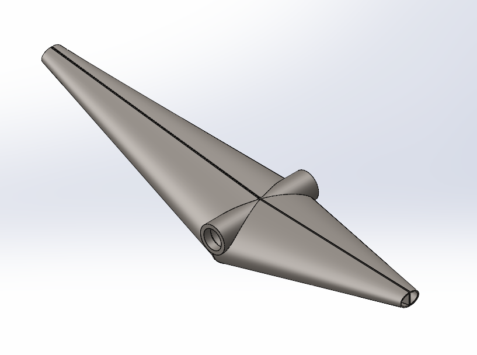
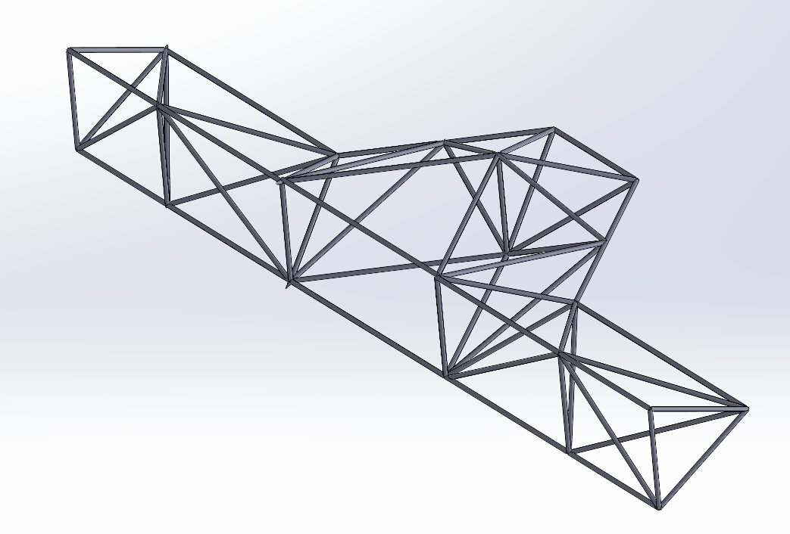
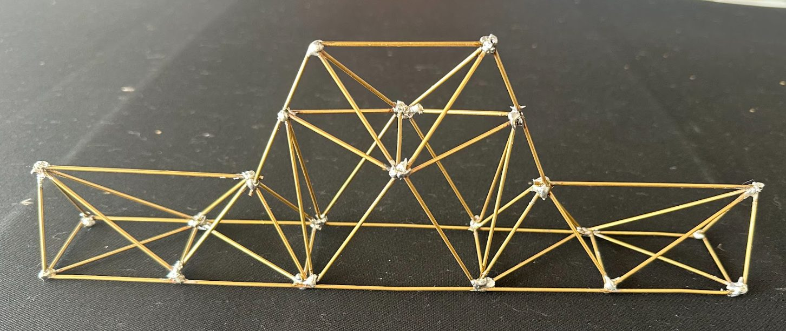

012D suspension geometry

This image represents a simplified 2D suspension model showing the tire, the upper and lower control arm interfaces to the rotor, chassis mounting locations, and shock positions. The model was used to simulate suspension behavior under bump and cornering conditions, allowing evaluation of how the control arms moved and responded throughout wheel travel.
- Developed the 2D suspension layout to define pickup point locations and overall wheel motion.
- Used geometric analysis to study how suspension members moved through travel and how those changes affected system behavior.
- Balanced packaging constraints with desired suspension kinematics.
- Used the geometry as the foundation for later component and structural design decisions.
02Upper control arm

- Designed the upper control arm based on suspension geometry requirements and chassis interface points.
- Considered load paths, member arrangement, stiffness, and manufacturability during the design process.
- Modeled the component in CAD and refined the design to support fabrication and assembly.
- Worked through the tradeoffs between strength, weight, and packaging within the suspension system.
03Rear frame


- Designed the rear frame structure to support suspension mounting, drivetrain packaging, and chassis stiffness requirements.
- Performed FEA to evaluate stress distribution and structural stiffness under loading conditions.
- Developed fabrication plans for the welded frame geometry and considered assembly accuracy during the design process.
- Built and tested a scaled model to evaluate torsional stiffness and compare physical behavior with design expectations.
04What I learned
- How early suspension geometry decisions influence downstream component and structural design.
- How to translate analytical layouts into real components that can be fabricated and assembled.
- How to use simulation and physical testing together to evaluate structural performance.